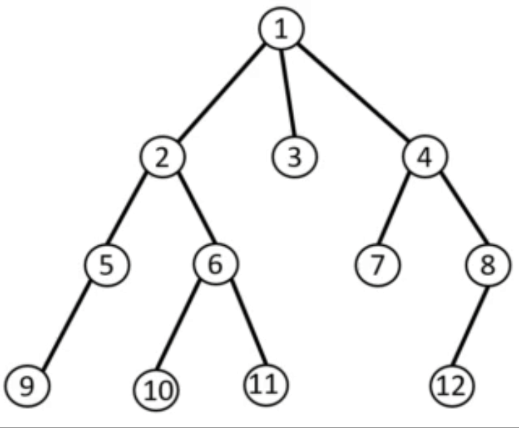

BFS |
|||||
| Главная | Основные понятия Виды графов |
Способы объявления | DFS | BFS | Доп.информация |
|
BFS, или Breadth First Search — алгоритм обхода графа в ширину. Граф — это структура из «вершин» и «ребер», соединяющих между собой вершины. По ребрам можно передвигаться от одной вершине к другой, и BFS делает это поуровнево: сначала проходит по всем ближайшим от начальной точки вершинам, потом спускается глубже. Выглядит это так: алгоритм начинает в заранее выбранной вершине и сначала «посещает» и отмечает всех соседей этой вершины. Потом он переходит к соседям посещенных вершин, затем — дальше по тому же принципу. Из-за характера распространения, похожего на волну, алгоритм еще называют волновым. BFS — один из двух популярных алгоритмов обхода. Второй называется DFS и подразумевает обход в глубину: сначала алгоритм проходит по ребрам «вглубь» графа. | |||||
Как работает алгоритм BFSАлгоритм простой и интуитивно понятный. Он проходит по вершинам графа, пока в том не останется непосещенных вершин, и рассчитывает самый короткий путь до целевой вершины. Чтобы показать его работу нагляднее, представим алгоритм пошагово. Начало работы. В качестве начальной можно выбрать любую вершину. На момент начала работы алгоритма все вершины помечены как непосещенные — их называют «белыми». Первое, что делает алгоритм, — помечает начальную вершину как посещенную (также используют термины «развернутая» или «серая»). Если она и есть целевая, на этом алгоритм завершается. Но чаще всего это не так. Поиск соседей. Алгоритм проверяет, какие соседи есть у начальной вершины. Они добавляются в «очередь действий» в том порядке, в каком алгоритм их нашел, и тоже помечаются как «серые». Это продолжается, пока у начальной вершины не останется «белых» соседей.  Переход на следующую вершину. Когда алгоритм проходит по всем соседям начальной вершины, он помечает ее как полностью обойденную. Такие вершины еще называют «черными»: алгоритм к ним не возвращается. Затем он переходит к одной из «серых» вершин — соседей начальной. Алгоритм выбирает первую вершину в очереди. Далее действия повторяются: «соседи» вершины, кроме «черной», заносятся в очередь. Когда и эта вершина будет пройдена, переход повторится по тому же принципу — первая вершина в очереди. В этом случае ею будет второй сосед начальной вершины — мы помним, что их добавляли в очередь первыми. И только когда соседи начальной вершины в очереди закончатся, алгоритм пойдет по следующему «уровню» вершин. Так и достигается обход в ширину. Конец алгоритма. Если очередь оказалась пустой, это значит, что «белых» и «серых» вершин больше не осталось. Алгоритм завершится. Если при этом целевая вершина не будет достигнута, это значит, что доступа к ней из начальной точки нет. Если целевая вершина достигается раньше, чем алгоритм пройдет по всему графу, это также может означать его завершение. Алгоритм остановится, потому что задача окажется выполнена: самый короткий путь к целевой вершине будет найден. Алгоритм поиска кратчайшего пути
| |||||